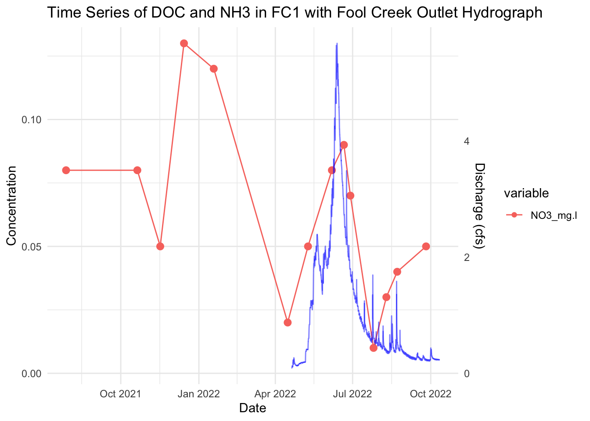
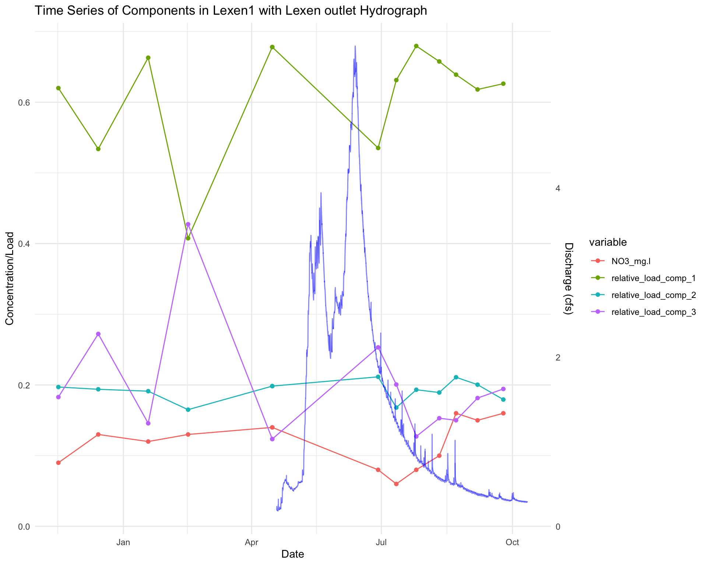

5.1 Hydrograph - Fool Creek fractions with NO3
gg <- ggplot() +
# Add points for the components, with specific styling for NO3_mg.l
geom_point(
data = plot_data_long,
aes(
x = datetime,
y = value,
color = variable,
shape = ifelse(variable == "NO3_mg.l", "NO3", "Other"),
size = ifelse(variable == "NO3_mg.l", 2.5, 1.5) # Larger size for NO3
)
) +
# Add lines for the components
geom_line(data = plot_data_long, aes(x = datetime, y = value, color = variable)) +
# Add the hydrograph as a line in the background
geom_line(
data = fchydrograph,
aes(
x = TMSTAMP,
y = Q..cfs. / max(Q..cfs.) * max(plot_data_long$value)
),
color = "blue",
linetype = "solid",
alpha = 0.5
) +
# Add secondary y-axis for the hydrograph
scale_y_continuous(
name = "Concentration/Load",
sec.axis = sec_axis(~ . * max(fchydrograph$Q..cfs.) / max(plot_data_long$value), name = "Discharge (cfs)")
) +
# Customize shape scale (optional, but makes the legend more descriptive)
scale_shape_manual(values = c("NO3" = 17, "Other" = 16)) + # Change shapes for NO3 and others
scale_size_identity() + # Directly map sizes without scaling
# Styling
theme_minimal() +
labs(
x = "Date",
y = "Concentration/Load",
title = "Time Series of Components in FC1 with FC Outlet Hydrograph"
) +
theme(
legend.position = "none", # Remove the legend
strip.text = element_text(size = 10) # Adjust labels size
)
# Display the plot
print(gg)
5.1.1 Hydrograph - Lexen Creek fractions with hydrograph

Figure 5.6: Figure. relative loadings over time from Lexen Creek outlet stream site only. Component 1 (humic) appears to increase with discharge while the fraction of Component 2 (humic) and Component 3 (protein-like) decrease during peak flow